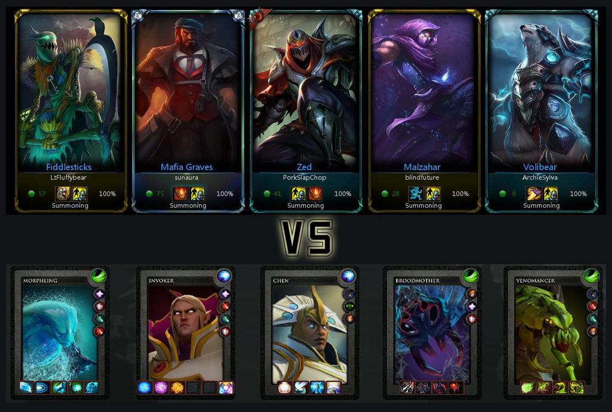
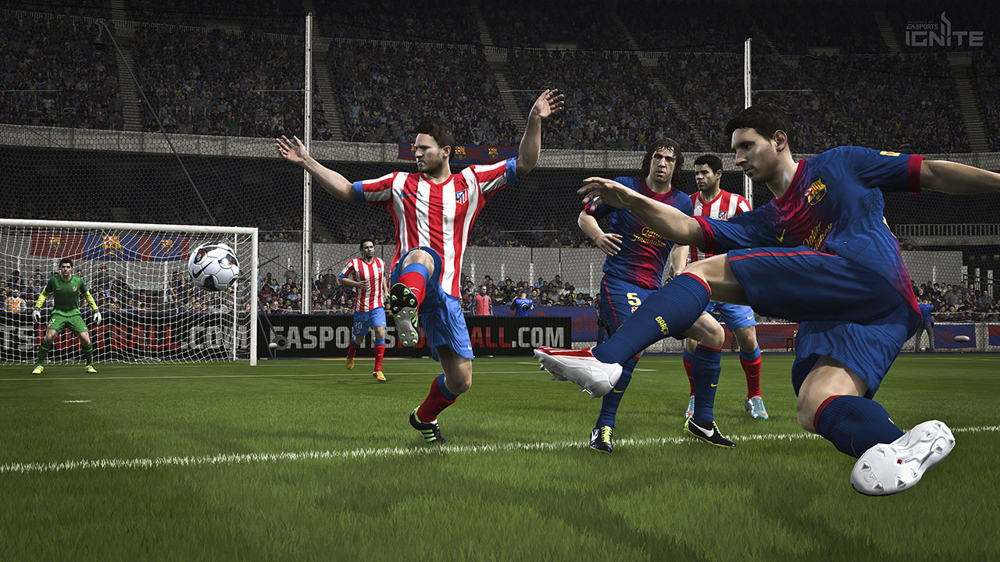
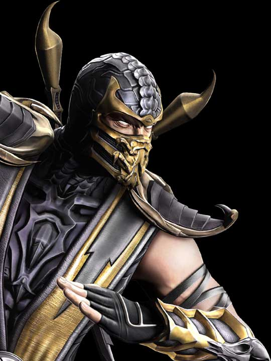

E-Sports hoje(){
Games
Por: Ari Junior
Ultimamente as competições de jogos estão presentes nas mais variadas plataformas e nos mais variados gêneros: desde estratégia em tempo real a jogos de tiro, passando por jogos de luta e jogos esportivos. A seguir apresentamos alguns exemplos de jogos que possuem uma adesão ao universo das competições oficiais:
MOBA:

Dota 2 vc LoL
Foco principal dos e-sports ultimamente, os MOBAs (Massive Online Battle Arena) são os jogos de maior adesão quando se trata de competitividade hoje em dia. Campeonatos amadores de Dota 2 e League of Legends são encontrados aos montes. Esse estilo de jogo, que teve sua primeira aparição no Defense of the Ancientes(Dota) de um MOD de Warcraft, na época ignorado pela Blizzard (desenvolvedora da série Warcraft), acabou conquistando vários jogadores pelo mundo e, por causa disso, vários jogos similares foram criados, como League of Legends, Heroes of Newerth , Smite, Dota 2, que como próprio nome diz é uma versão 2.0 do pioneiro Dota desenvolvido pela Steam. Mesmo com várias versões de diferentes empresas, os que mais se destacam são o Dota 2 e o League of Legends.
Estratégia em Tempo Real:

Star Craft 2
Coordenação motora, velocidade de raciocínio, analise crítica. Essas são as características principais de um bom jogador profissional desse gênero. Os jogos de estratégia em tempo real são ótimos para exemplificar o significado do conceito de e-sports. São jogos rápidos, indecisos, em que o elemento principal é o fato de não saber ao certo onde se encontra o inimigo e também qual será seu próximo movimento. Não dá pra falar em jogos de estratégia em tempo real sem citar Star Craft e seu sucessor Star Craft 2, que contribuíram e muito para a ascensão e expansão dos campeonatos oficiais de jogos pelo mundo.
Outros Gêneros:

Fifa 14

Scorpion
Luta, FPS, esportivos, vários outros gêneros de jogos possuem suas áreas profissionais, porem não são tão conhecidos e valorizados como os jogos de estratégia e MOBA. Jogos como Fifa, Mortal Kombat, Battlefield são exemplos de jogos conceituados e com seus jogadores profissionais, mas que não possuem tanta visibilidade.
Referências:
}